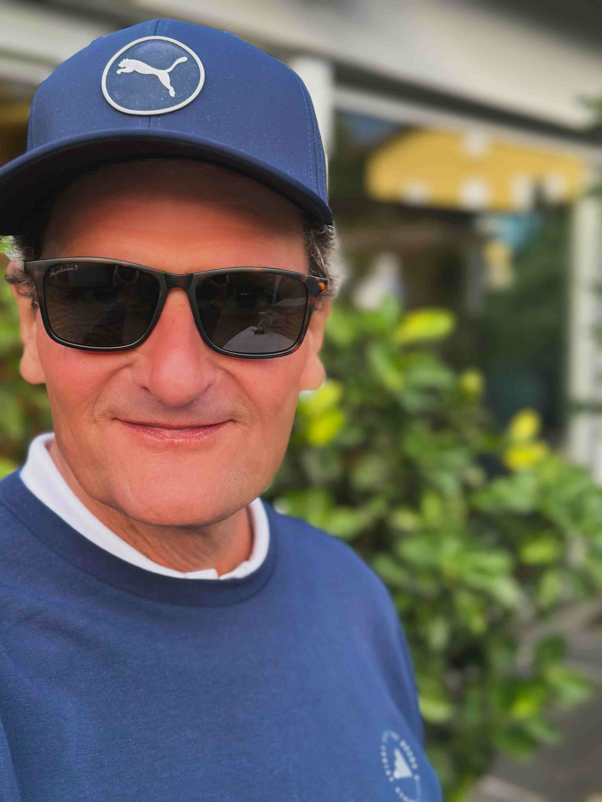
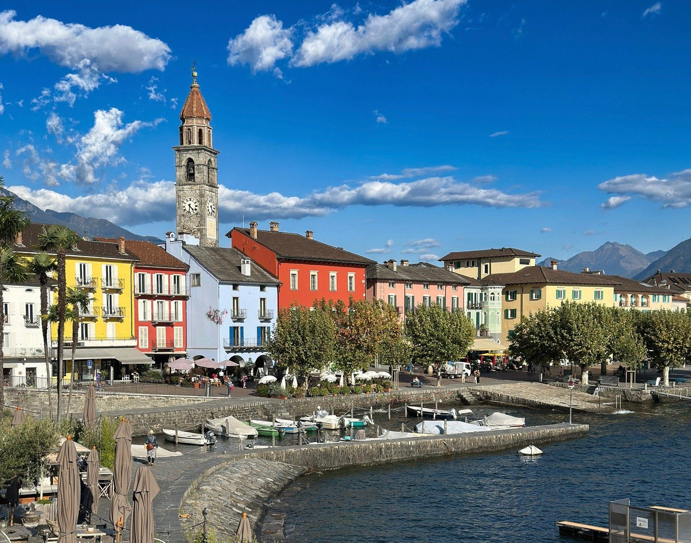

Der Lago Maggiore glitzert in der Morgensonne. Ich stehe am Abschlag des 1. Lochs und atme die klare Luft ein. Ascona – ein Ort, der Zeitlosigkeit verkörpert.
Das Golfen hier ist anders. Nicht nur Sport, sondern Meditation. Zwischen Palmen und Alpenpanorama finde ich Ruhe. Der Schläger schwingt sich, der Ball fliegt – nicht immer gerade, aber mit guter Aussicht.


Nach der Runde ein Espresso am See. Das ist Glück. Nicht perfekt, aber authentisch.